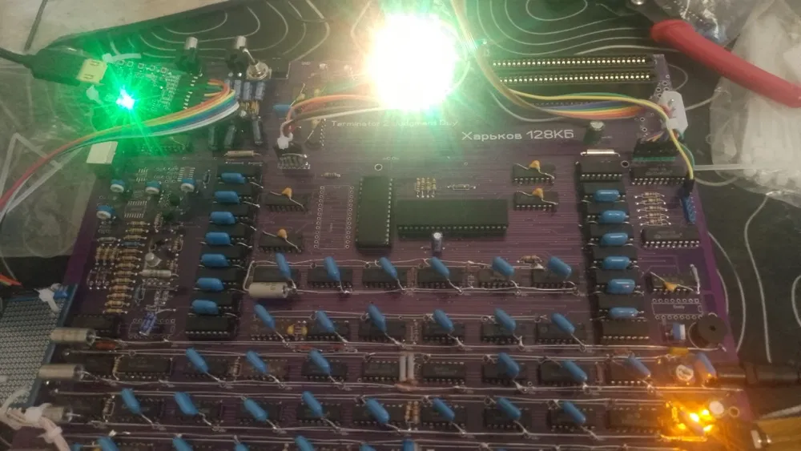

Харків 128 Rev 2 — це збалансований клон ZX Spectrum 128K, який поєднує розширені можливості та надійність у повністю готовому до роботи форматі.
Пристрій вже зібраний і протестований, тому ви можете одразу почати користуватись без пайки чи налаштувань.
Завдяки 128 KB пам’яті та наявності AY звуку, відкривається доступ до більш просунутих ігор, демо та програм, недоступних для 48K моделей.
Rev 2 версія відома більш стабільною роботою та вдосконаленою схемотехнікою у порівнянні з ранніми варіантами.
Це ідеальний вибір для:
• тих, хто хоче більше, ніж 48K
• стабільного щоденного використання
• входу в світ 128K Spectrum без переплати
Золота середина між простими клонами та топовими рішеннями.
